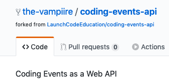

So far you have been writing and running your code on your local machine. This works well for development but in order to host your application on the internet you will need to run it on a remote machine.
Recall that when we publish our application we are creating a set of files that we can use to run it. Once we have published the application we gain the benefit of portability. We can take that executable bundle of files and run it on any other machine.
In today’s studio we’re going to practice the steps needed to run code on a different machine than where it was written. Each of you will partner with another student to practice cloning, publishing, executing, and connecting to each other’s applications.
The application we will work with is a project we will be building up throughout the week as we introduce new topics. It is a basic REST web API with a SQLite database and a single resource – CodingEvents. The API has endpoints for CRUD operations to manage CodingEvents. In other words it exposes endpoints for Creating, Reading (the collection or a single resource), and Deleting CodingEvents.
Because web APIs are inherently headless (meaning they do not have a front-end like an MVC app) the project includes a tool called Swagger UI. This is a simple web page that documents the API and allows you to explore the endpoints with a built-in tool for executing requests.
We will cover web APIs, REST, and Swagger in greater detail tomorrow. So feel free to look over the code but don’t worry if it looks foreign to you! Today the goal is just to practice publishing, executing, and connecting across machines.
We will begin by forking the API repo onto our own accounts. This will allow us to make and push changes we make throughout the week.
First go to `Coding Events API Repo<https://github.com/launchcodeeducation/coding-events-api>`_.
At the top right corner select the Fork option:

Once you have forked the repo you will be sent to the forked version under your GitHub account:
Copy the remote address using the green Clone or download button:

Next clone the repo on your local machine. Make sure to clone the repo into a location you will remember.
The example below clones it into the ~/coding-projects/azure/coding-events-api file path. If you already have a preferred location feel free to edit the command for that file path instead:
$ git clone https://github.com/<your username>/coding-events-api.git ~/coding-projects/azure/coding-events-api
There are a number of branches that will correspond with the studios for each day. Today we will be working with the first one that has the basic version of the API.
Checkout the 1-sqlite branch:
$ git checkout 1-sqlite
Before we get to running our own VM on Azure we need to get comfortable with the basics. Remember that virtual machines don’t have a graphical interface like your IDE. There won’t be a shiny green play button in the cloud to run your application. In fact, there won’t even be a mouse pointer!
We will simulate what it’s like to run our application in the cloud by going through similar steps locally from the command line. First on your own machine and then by swapping with your partner to publish and run each other’s code.
Note
Before continuing make sure you have the tools you need. If you do not have the linux subsystem set up with the dotnet CLI tool refer to the ref::cli-setup page.
There are multiple ways to publish your project and even more to customize how it is packaged. In this course we will focus on the `self-contained<https://docs.microsoft.com/en-us/dotnet/core/deploying/#publish-self-contained>`_ strategy with options to build a single executable project file. Rather than using our IDE we will use the dotnet CLI tool to get comfortable working from the command line.
First navigate to your cloned repo (solution) directory. In the cloning example above the path to that directory was ~/coding-projects/azure/coding-events-api:
$ cd ~/coding-projects/azure/coding-events-api
From within the solution directory run the following command to publish your first Release:
$ dotnet publish -c Release
This will publish to CodingEventsAPI/bin/Release/netcoreapp3.1/linux-x64/publish/
Notice that it automatically published as a self-contained, single (executable) file, built to execute on the linux-x64 runtime. These defaults were set in the CodingEventsAPI/CodingEventsAPI.csproj configuration file by the following attributes:
<?xml version="1.0" encoding="utf-8"?>
<Project Sdk="Microsoft.NET.Sdk.Web">
<PropertyGroup>
<SelfContained>true</SelfContained>
<PublishSingleFile>true</PublishSingleFile>
<RuntimeIdentifier>linux-x64</RuntimeIdentifier>
These defaults are the equivalent of running the publish command with the following options:
$ dotnet publish -c Release -r linux-x64 -p:PublishSingleFile=true
Tip
If you change the -r option to a different RID value you can build for other runtimes as needed while still using the defaults for the other options.
Within the CodingEventsAPI/bin/Release/netcoreapp3.1/linux-x64/publish/ directory is the single executable file CodingEventsAPI. All you need to do to run it is execute that file.
$ ./CodingEventsAPI/bin/Release/netcoreapp3.1/linux-x64/publish/CodingEventsAPI
Now you can navigate to `https://localhost:5001`_ and view the Swagger API documentation!
After executing on your local machine it’s time to practice running on a “remote” machine. You and your partner will take turns as either the “remote server machine” or the “development machine”.
As the development machine you are simulating where the source code is developed (your local machine).
Open the CodingEventsAPI/Startup.cs file. then edit the code so your partner can tell it’s your Coding Events API.
Warning
If you do not see the code on this line you are likely on the wrong branch. Make sure you are working on the 1-sqlite branch before continuing.
You will see a configuration for Swagger on line 25:
Change the Title of the UI to include your name. You can also customize the Description if you would like. Then commit and push your changes:
$ git add .
$ git commit -m "made it my own!"
$ git push
As the remote server machine you are simulating a virtual machine where application will be hosted.
Clone your partner’s repo. This time clone it into a different directory by prefixing the directory name with your partner’s name. Using the example path from before ~/coding-projects/azure/coding-events-api:
$ git clone https://github.com/<partner username>/coding-events-api ~/coding-projects/azure/<partner name>-coding-events-api
Navigate to your partner’s cloned repo directory from the command line. Once in the directory run the publish command to package the API into its executable. After publishing execute the published executable just as you did earlier.
As the final step open the Swagger documentation page `https://localhost:5001`_ in your browser.
Question
If your partner navigates to the same page on their laptop (development machine) do you think they will be able to see the page? Discuss your answer with each other then test it out.
Now switch roles with your partner and go through the steps again.
While this exercise was only a simulation the steps involved will be the same when you host your API in an Azure VM. Development takes place on a local development machine. Hosting takes place in the cloud after publishing and executing.
Keep this in mind if you feel lost or overwhelmed when working on your studio tomorrow. Hosting an API in the cloud is no different than publishing and executing on a remote server machine. Whether that remote machine is your partner sitting next to your or virtualized in a publicly networked machine is immaterial.
Fun Fact
The modern development process to host an application through developing, publishing, and executing takes place on three different machines! Development takes place locally but a cloud-hosted CI Pipeline handles publishing (and other automated tasks). The execution itself takes place on a separate cloud-hosted machine like an Azure VM.
Earlier you discussed what would happen if you tried to access the documentation page running on your partner’s machine. You weren’t able to because localhost is just that – a local host name – mapped to the machine’s internal IP address 127.0.0.1. Recall that this address is only accessible from within the machine that is executing the application.
In order to access the page you need the network IP address of the machine and the server process port. Remember that every machine on a network is assigned a unique IP address. And every server process running on a machine has a port it listens on.
On the internet[work] every machine connected to it has its own IP address that uniquely identifies it across the entire network called the public IP address. But on the WiFi (WAN) network your laptop (machine) is connected to it has been assigned an internal IP address that uniquely identifies it called its private IP address.
In this section we will take our first step towards connecting to a machine hosted on a network. Before diving into the vast seas of the open internet we will practice within the smaller pond of the WiFi network.
Your instructor will now play the remote server machine by publishing and executing the API. Then they will identify their machine’s private IP address on the WAN and distribute it to the class.
Navigate to your instructor’s machine IP address in your browser. Don’t forget that you have to include the port in order to view their hosted documentation.
Question
Why did you have to include the port? Why don’t you typically need to include it when accessing sites on the internet?
Earlier you learned how hosting on a remote server machine is functionally the same whether it takes place on a partner’s laptop or a VM in the cloud. Connecting to machines that are hosted on a network is equally analogous from a small WAN like the WiFI to the open internet itself.
Remember that everything that happens in the cloud, as mysterious and elusive as it may seem, is just a virtualized representation of what happens in the physical world. It often feels like magic, and it arguably is, but it follows the same logical principles that it was designed to simulate.
If you want to try connecting to your partner’s machine over the WAN you can use one of the following commands to identify each other’s network IP addresses and share them with each other. Don’t forget to start the server first!
Warning
As a security best practice do not leave server processes listening on exposed ports running unattended while connected to a public network. We will learn about how to use firewalls and Azure networking rules to protect our VM later in the course.
Select the command for your OS:
$ hostname -I
# the inet address is your machine's IP
$ ifconfig en0
# the IPv4 entry is your machine's IP
$ ipconfig